| 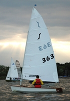 |
Solo
The solo is a single handed dinghy measuring 3.78 metres (or
12ft. 5in) with a sail measuring 8.36 sq. metres (or 90 sq.
ft). The beam is 1.55 metres (5ft 3in) The Solo was designed
by Jack Holt in 1956. We have a strong Solo fleet that races
each Sunday in the season at the club and also nationally. |
| 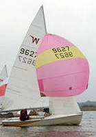 |
Wayfarer
The Wayfarer is a double-handed dinghy, designed by Ian Proctor
in 1957. Since its development there have been a number of
different versions. The Wayfarer measures 4.827 m (15 ft 10
in) with a mainsail area of 8.83 sq. m (95 sq. ft.), a jib
area of 2.78 sq. m (30 sq. ft.) and a spinnaker area of 13.5
sq. m (145 sq. ft.). The weight is approximately 169 kg (372
lb). HBSC has a well represented Wayfarer fleet. |
| 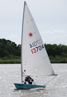 |
Laser
The Laser is a single handed dinghy that was designed in 1970
by Bruce Kirby. The Laser measures 4.23m with a sail area of
7.06 sq metres and weighs approximately 57kg. The beam
is 1.37 metres. |
| 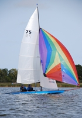 |
Norfolk Punt
The Norfolk Punt is a very high performance two man racing
dinghy. Sail area is approximately 16.6 sq. metres (main and
jib) but the spinnaker is not measured so it is as big as
you dare! Hull length varies between 5.79 to 6.76 metres.
Hull weight is approximately 100 kilogrammes. Carbon fibre
spars and assymetric kites are allowed. Hull materials range
from mahogany on oak through plywood and glassfibre to carbon
fibre. |
| 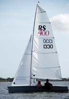 |
RS400
The multiple award winning RS sailboat range,
developed and produced by LDC Racing Sailboats, has earned
a reputation as the finest range of sailboats. Every RS
has been acknowledged as the best of its type. RS400 The two person
modern classic. Fast, forgiving and superb racing. |
| 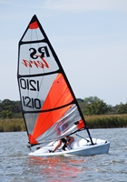 |
RS Tera
The new fast, fun and ice-cool way into sailing - The RS Tera is modern, tough and affordable -
perfect for learning, training, racing and even rowing. These super little boats are growing in
popularity at the club. With 3 sail options there is a Tera for all sizes. The first
prototype of the Tera first saw water on Hickling Broad.
|
| 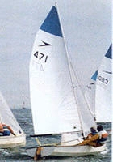 |
Leader
The leader is a hard chine general purpose dinghy for racing
or cruising, with a length of 14 feet, beam of 5 feet 6 inches,
weighing 245lbs (minimum). Rig is Bermudan - Main and Genoa
plus either Standard or Asymmetric Spinnaker. Racing Crew
2, Portsmouth Number 1116
The first Leaders were of Wooden construction, later GRP and
Composite versions became available. Today the Leader II as
it is known, since an upgrade to the internal layout, is only
made in GRP. The Class is still a One Design despite the number
of versions available and the recent introduction of Asymmetric
Spinnakers and older boats can still be competitively raced.
The Leader was designed in 1962 by Gordon Pollard. |
| 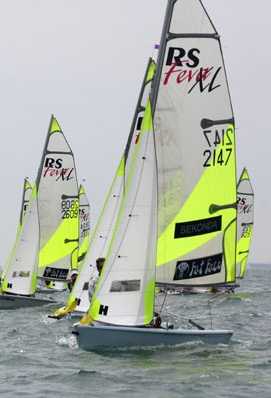 |
RS Feva
The worlds best selling two-person sailboat in recent years, an ISAF International Class, winner
of Dinghy of the Year in the USA, Coup de Coeurs in France, an RYA Recognised Junior class… the
list of honours goes on and on. The RS Feva is the new benchmark in small sailboats.
It has a length of 3.64m a beam of 1.42m and weighs 63kg |
| 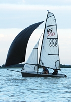 |
RS500
The RS500 has a repertation for being one of the best high performance double hander
out on the market. It's very fast especially downwind and is fitted with a single trapeze.
Simply the best combination of speed, user friendliness and price currently available. Fast growing Class. |
| 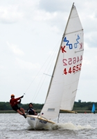 |
420
The 420 is a two-man boat with trapeze, and spinnaker. The
420 was designed 20 years ago by Vanguard Sailboats. The boat
measures 13 ft 9 in with a sail area of 110 sq ft. and weighs
approximately 260 pounds. |
| 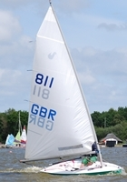 |
Splash
The Splash boat has a modern design similar to the Laser but
a little less powerful and easier to control for the lighter
person. The splash has a strict one-design with parts made
by RWO and Ronstan.The splash was designed by Roel Wester
BV and its new UK distributors are Pinnel & Bax. GPR hull,length
of 3.55m,beam=1.30m, weighs 53 to 55kg, sail area=5.50sqm
and has a handicap number of 1183. |
| 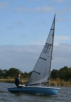 |
Phantom
The Phantom is a single handed boat, designed by Paul Wright
and Brian Taylor in 1971. It was built to accommodate all
weights (ideally 12-18 stone) The Phantom has a length of
4.42m (14ft 6in) and a sail area of 9.75 sq.m (105sq ft).
The weight is 61kg (134.2lb). |
| 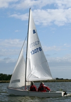 |
GP14
The original 'general purpose' dinghy for racing, cruising
etc.The GP 14 was designed by Jack Holt in 1949 and is normally
sailed two-up, but can be sailed single handed, or with the
family. Optimum overall crew weight for racing 120/150 kg.
The length 4.27m (14ft) beam 1.54m weight (incl. centreboard)
133kg. Sail area 12.85 sq.m, plus spinnaker 8.4 sq.m |
| 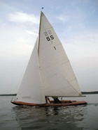 |
Slipstream
The slipstream is a high class dinghy. At 24.5 ft long, about
4ft wide with a large and variable sail area, it is a fast
two or three hander.
Designed by a local boat builder and of grp or cold moulding
wooden construction with mahogany veneer, it is an eye-catching
craft. There are only six boats in existence. One of the club
members David Frary achieved the record time for completing
the Norfolk Three Rivers Race, sailing a slipstream. |
| 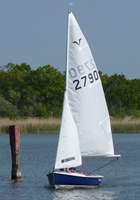 |
Gull
The Gull sailing dinghy was designed by Ian Proctor (who also designed the Topper, Wanderer and Wayfarer among many others) in 1956 to teach his own children to sail. It is a safe stable boat, as happy cruising as it is racing. Classed as a 2 person boat it can easily be sailed, launched and recovered single handed. It has a length of 3.35m a Beam of 1.44m and Weighs 88kg
|
| 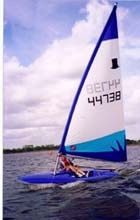 |
Topper
The Simple and Sensational Topper - Whether just messing
about in boats, having fun on the Broad, learning to sail,
flat out blasting or competitive racing, there are so many
reasons for choosing the fantastic Topper! It requires little
maintenance, is easily rigged in a matter of minutes, is
rugged and safe for beginners and an exciting race boat
too as your skills develop AND it is car-toppable! It truly
is the most versatile of sailboats!
|
| 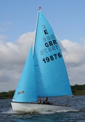 |
Enterprise
Two man one-design dinghy used for racing and cruising. Designed
by Jack Holt in 1956. PN 1116. Length 13 ft. 6 inches or 4.04
metres. |